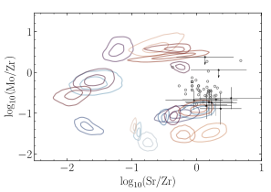
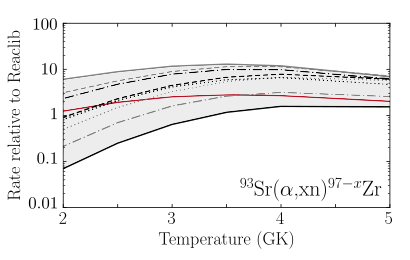
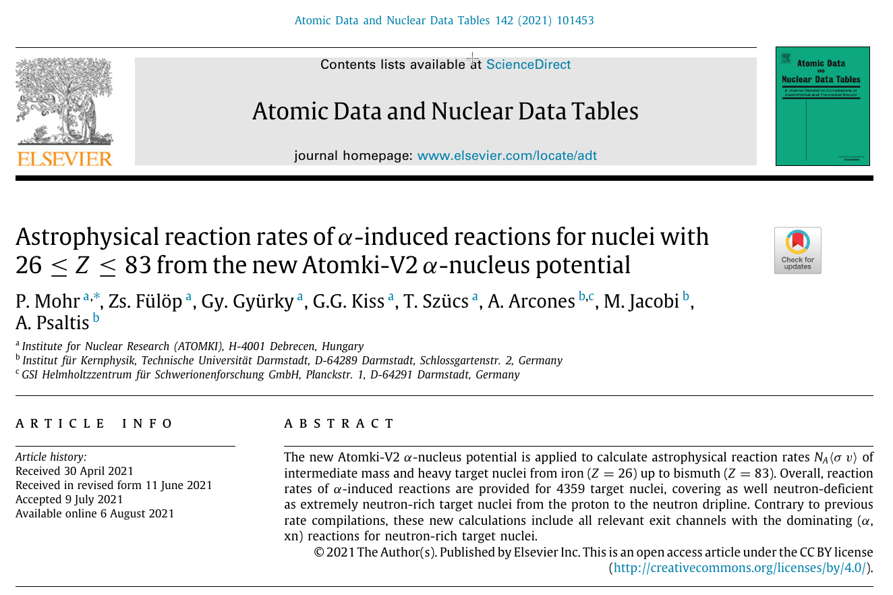
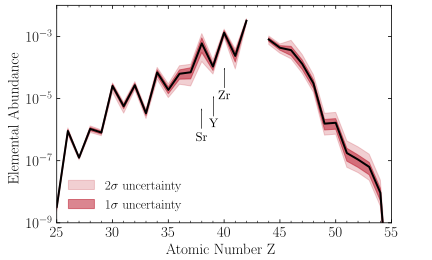
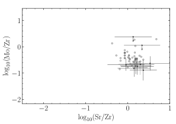
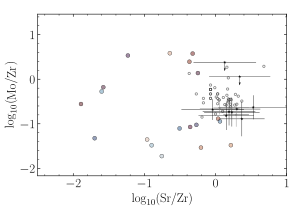
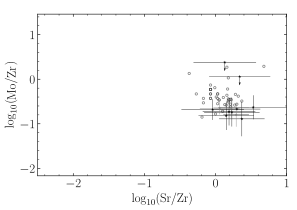
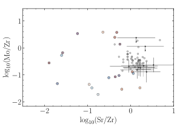
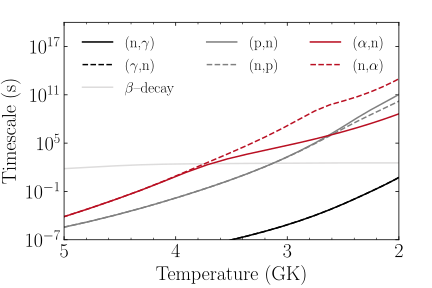

Constraining nucleosythesis in neutrino-driven winds using the impact of $(\alpha, xn)$ reaction rates
Thanassis Psaltis (@psaltistha)
TU Darmstadt, Institut für Kernphysik Theoriezentrum

Based on A. Psaltis et al., Astrophys. J 935 27 (2022), arXiv: 2204.07136 [astro-ph]
How I see nuclear astrophysics
HD 122563 (DSS2/ Aladin Sky Atlas)
What do the old stars reveal to us?
⚠️ Solar r-process = Solar total - Solar s-process - Solar p-process
How many "r-processes" contribute to the production of elements between Sr and Ag?
Nucleosynthesis
in neutrino-driven ejecta
How I see nuclear astrophysics
The weak $r$-process and the role $(\alpha, n)$ reactions
Take-home message #1
Elements between Sr and Ag can be produced in $\nu$-driven outflows via the weak $r$-process
What is the impact of the
$\mathbf{(\alpha,xn)}$ reactions
in
the weak $r$-process?
How I see nuclear astrophysics
How well do we know the $(\alpha,xn)$ reaction rates?
The $(\alpha,xn)$ reaction rates are sensitive to the $\alpha$-optical model potential and can differ by up to two orders of magnitude.
Enter the ATOMKI-v2 $\alpha$-nucleus potential
How I see nuclear astrophysics
The framework of the impact study
The impact of new $(\alpha,n)$ reaction rates to
elemental abundances

The impact of new $(\alpha,n)$ reaction rates
to elemental abundance ratios
Combine observations, astrophysical modeling and nuclear physics uncertainties
 



Which are the most important
$\mathbf{(\alpha,xn)}$ reactions
for
the weak $r$-process?
The most important $(\alpha,n)$ reactions
for the weak $r$-process
- $\mathrm{^{84}Se}$, $\mathrm{^{87-89}Kr, ^{93}Sr}$
Affect many elemental ratios in many astrophysical conditions
- $\mathrm{^{86}Br,^{86, 90}Kr, ^{87-89}Rb, ^{91, 92, 94}Sr, ^{94}Y}$
Affect few elemental ratios in many astrophysical conditions
- $\mathrm{^{85}Se, ^{85}Br}$
Affect many elemental ratios in few astrophysical conditions
- $\mathrm{^{63}Co, ^{67}Cu, ^{79, 81}Ga, ^{76}Zn, ^{80, 82}Ge,
^{83}As}$
$\mathrm{^{87, 90, 91}Rb, ^{88-90}Sr, ^{95, 96}Y, ^{96-98}Zr}$Affect few elemental ratios in few astrophysical conditions
Take-home message #2
We combined observations, astrophysical modeling and nuclear theory
to study the impact of $(\alpha,xn)$ reactions to the weak $r$-process
Can we study these $\mathbf{(\alpha,xn)}$ reactions in the lab?
How I see nuclear astrophysics
What has been done so far?
- $\mathrm{^{86}Kr(\alpha,n)^{89}Sr}$, $\mathrm{^{96}Zr(\alpha,n)^{99}Mo}$ and $\mathrm{^{100}Mo(\alpha,n)^{103}Ru}$ at ATOMKI
G.G. Kiss et al., Astrophys. J 908, 202 (2021) • T.N. Szegedi et al., Phys. Rev. C 104, 035804 (2021)
See talk by Szegedi, Friday Session 1 - $\mathrm{^{75}Ga(\alpha,n)^{78}As}$, $\mathrm{^{85,86}Kr(\alpha,xn)}$, $\mathrm{^{85}Br(\alpha,xn)}$ at NSCL/FRIB (HabaNERO/SECAR)
F. Montes, Z. Meisel et al.
See poster by Garg, Tuesday & talk by Tsintari, Thursday Session 3 - $\mathrm{^{86}Kr(\alpha,xn)^{89}Sr}$ and $\mathrm{^{100}Mo(\alpha,xn)^{103}Ru}$ at ANL/NSCL (MUSIC)
M. L. Avila, J. Pereira et al.
W. J. Ong et al., Phys. Rev. C 105, 055803 (2022) - $\mathrm{^{86}Kr(\alpha,n)^{89}Sr}$ and $\mathrm{^{94}Sr(\alpha,n)^{97}Zr}$ at TRIUMF (EMMA)
C. Aa. Diget, A. M. Laird, M. Williams et al.
See talk by Angus, this session
First measurement of the $\boldsymbol{\mathrm{^{93}Sr}(\alpha,xn)\mathrm{^{96-x}Zr}}$ reaction
$\mathrm{^{93}Sr}(\alpha,xn)\mathrm{^{96}Zr}$ at Argonne with MUSIC
- Re-accelerated $\mathrm{^{93}Sr}$ beam from CARIBU.
- Close to 100% efficiency.
- Measure a large range of excitation functions of angle and energy integrated cross sections using single beam energy
What we expect in the near future

More observations of metal-poor stars and measurements on the key $(\alpha, xn)$ reactions will help us constrain the production site of the elements between Sr and Ag.
Acknowledgements
 Almudena Arcones
Melina Avila
Camilla Juul Hansen
Max Jacobi
Zach Meisel
Peter Mohr
Almudena Arcones
Melina Avila
Camilla Juul Hansen
Max Jacobi
Zach Meisel
Peter Mohr
 Fernando Montes
Wei Jia Ong
Hendrik Schatz
Fernando Montes
Wei Jia Ong
Hendrik Schatz


Take-home messages
- Elements between Sr and Ag can be produced
in neutrino-driven outflows via the weak $r$-process. - We combined observations, astrophysical modeling and nuclear theory
to study the impact of $(\alpha,xn)$ reactions to the weak $r$-process. - Future $(\alpha,xn)$ experiments using rare isotope beams (RIBs)
will shed light on the production of elements between Sr and Ag.
Backup slides
The importance of the $(\alpha, n)$ reactions
$\mathrm{Timescale}: \frac{1}{\langle{\tau_x}\rangle} = \frac{\sum_{Z,A} \lambda_x(Z,A) Y(Z,A)}{\sum_{Z,A} Y(Z,A)}$